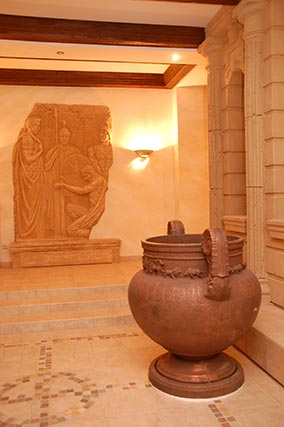
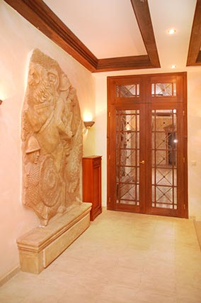
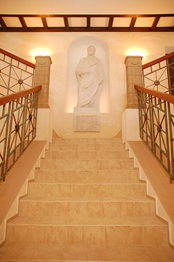
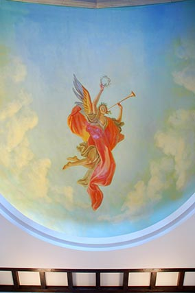
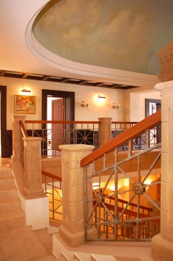
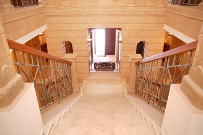
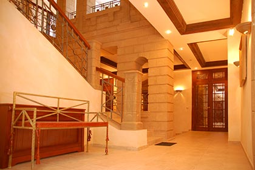

| Главная | Галерея | Объекты | Прайс | Статьи | Контакты |
Усадьба в Шереметьево
Строительство и отделка Ландшафтные работы
Усадьба на Ленинградском шоссе 37 км от МКАД
Работы велись с 15.01.04 по 01.06.2006
Строительство большого дома 720 м² гостевого дома 190 м² гаража 120 м²
Отопление: Монтаж котельной, отопления, водопровода, фильтрации, канализации, установка чистовых сантехнических приборов. По отоплению была внедрена новая система управления температурой в доме в зависимости от погоды т.е котёл в тёплую погоду включался реже, а значит экономил газ!
Комплексный монтаж электроснабжения: монтаж электропроводки со штробами, изготовление электро-щитка, подключение всех систем, установка розеток, выключателей, люстр, бра, подключение бытовых приборов, монтаж слаботочной проводки, установка видеодомофона, сигнализации, аккустических систем, датчиков протечек.
Вентиляция: приточно-вытяжная вентиляция в бассейне, кондиционирование спален, естественная вентиляция с помощью вентиляционных шахт
Отделка класса люкс: возведение перегородок, штукатурка стен, плитка, шпатлёвка, покраска, установка дверей, подоконников.
Пол: Гидроизоляция, стяжка, паркетная доска, плитка, плинтуса, дикий камень.
Потолок: гипсокартон, шпатлёвка, потолочные плинтуса, покраска.
Декоративная отделка: работы по лепнине, роспись стен, покраска декоративными штукатурками, сусальное золото патина - эффект старения меди, декоративные элементы из дерева, скульптуры выполнявшихся по индивидуальному заказу воссоздавших по картинам и учебникам наиболее точно внешний облик великих людей. Таких статуй нет ни в одном музее мира!
Внутренняя отделка
Строительство
|  |  |
При входе в дом слева и справа два искусствено состареных барельефа. Олицетворяющих битву римлян со львами и присягу Юлию Цезарю солдат
 |
 |
Статуя Марка Аврелия римского императора и лестница выполненая в римском стиле с характерными им узорами
|  |  |
На потолке лестницы и холла распологается купол с ангелом олицетворяющим триумф готовым одеть венок победителю (выполненый росписью)
|  |  |
По идее архитектора всё завязано на старинном портике построенном некогда римляними и оставшемуся нам с тех времён. Уже в наше время дом был построен вокруг портика неразрушв историю и построив всю концепцию усадьбы в духе того времени.